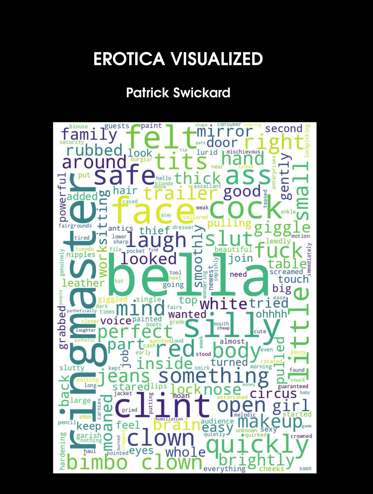

Erotica Visualized
Patrick Swickard
8.5"x11" paperback, 202 pages
Sometimes I claimed my stories were real
Like the story about the leather clown
She had short, spiky black hair
Small, but perfectly formed breasts
And was always kitted out in the same outfit
Leather skirt, fishnet stockings
Floppy shoes, a big, red nose
A pair of leather wrist bracelets with spikes
A big, red smile painted on
And a big, shiny horn
Which she would honk and honk during sex
Until she had an orgasm
- King Missile
A word cloud is a visualization technique which shows the most commonly used words in a text (aside from short words like “a” and “the” and “and”) in a convenient format where the font size corresponds to the frequency the word is used. It’s one way of quickly seeing the content of a piece of text. This book features word cloud visualizations (generated by Python) for numerous pieces of erotica dredged from the depths of the internet. And boy are there some weird ones in here. Clown bimbo fetishes, balloons, and all kinds of other horrifying content, summarized in one chart for your convenience.